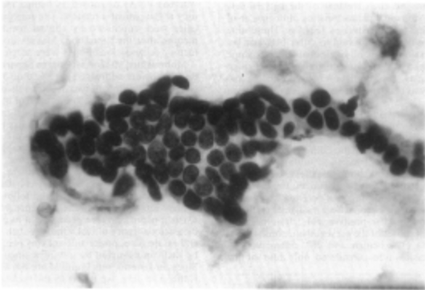
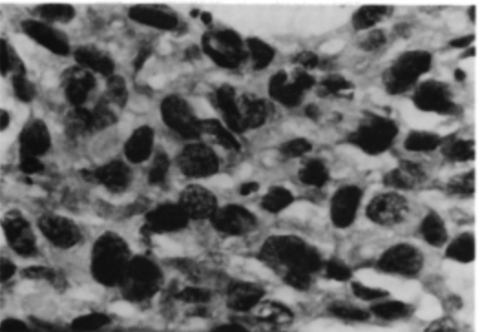

Data from a case-control study of esophageal cancer in Ille-et-Vilaine, France, evaluating the effects of smoking and alcohol on the incidence of esophageal cancer. Smoking and alcohol are associated risk factors for squamous cell cancer of the esophagus, rather than adenocarcinoma of the esophagus, which is associated with obesity and esophageal reflux (more details available below the variable definitions).
Format
A data frame with 88 rows and 5 variables, with 200 cases and 975 controls.
- agegp
6 levels of age: "25-34", "35-44", "45-54", "55-64", "65-74", "75+"; type: ordinal factor
- alcgp
4 levels of alcohol consumption: "0-39g/day", "40-79", "80-119", "120+"; type: ordinal factor
- tobgp
4 levels of tobacco consumption: "0-9g/day", "10-19", '20-29", "30+"; type: ordinal factor
- ncases
Number of cases; type: integer
- ncontrols
Number of controls; type: integer
Source
Breslow, N. E. and Day, N. E. (1980) Statistical Methods in Cancer Research. Volume 1: The Analysis of Case-Control Studies. IARC Lyon / Oxford University Press. Originally in base R datasets.
Details
An original base R dataset, though of somewhat unclear origin. The statistical textbook source is clear, though it is not clear which of the original epidemiological papers on esophageal cancer in Ille-et-Vilaine is referred to by this dataset. The original authors of the medical study were not credited in the base R dataset. There are several possible papers in PubMed, none of which quite match up with this dataset. This could be from Tuyns, AJ, et al., Bull Cancer, 1977;64(1):45-60, but this paper reports 778 controls, rather than the 975 found here. A 1975 paper from the same group reported 718 cases (Int J Epidemiol, 1975 Mar;4(1):55-9. doi: 10.1093/ije/4.1.55.). There is also another possible source - a 1975 paper from the same group, Usefulness of population controls in retrospective studies of alcohol consumption. Experience from a case--control study of esophageal cancer in Ille-et-Vilaine, France, Journal of Studies on Alcohol, 39(1): 175-182 (1978), which is behind a publisher paywall.
Figure 1 Benign FNA of Breast
Benign fine needle aspirate (FNA) of a breast lesion. Notice the regular size of cells and nuclei, which are organized in orderly spacing. The nuclei are homogeneously dark with few visible nucleoli. 
Figure 2 Cancerous FNA of Breast
Malignant (cancerous) fine needle aspirate (FNA) of a breast lesion. Notice the very irregular size of cells and nuclei, which are are disorganized and seem to be growing over each other. The nuclei are also less homogeneously dark and more granular, suggesting active transcription from the dark nucleoli within each nucleus. 